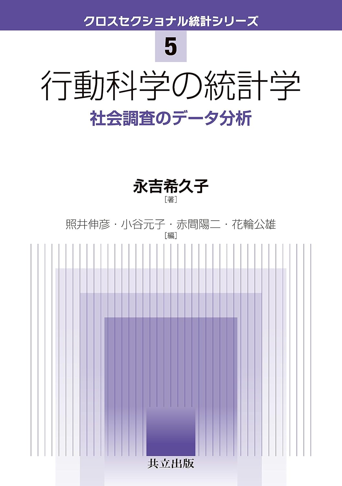

R version 4.5.0 (2025-04-11)
Platform: aarch64-apple-darwin20
Running under: macOS Sequoia 15.4.1
Matrix products: default
BLAS: /Library/Frameworks/R.framework/Versions/4.5-arm64/Resources/lib/libRblas.0.dylib
LAPACK: /Library/Frameworks/R.framework/Versions/4.5-arm64/Resources/lib/libRlapack.dylib; LAPACK version 3.12.1
locale:
[1] ja_JP.UTF-8/ja_JP.UTF-8/ja_JP.UTF-8/C/ja_JP.UTF-8/ja_JP.UTF-8
time zone: Asia/Tokyo
tzcode source: internal
attached base packages:
[1] stats graphics grDevices utils datasets methods base
loaded via a namespace (and not attached):
[1] htmlwidgets_1.6.4 compiler_4.5.0 fastmap_1.2.0 cli_3.6.4
[5] tools_4.5.0 htmltools_0.5.8.1 rmarkdown_2.29 knitr_1.50
[9] jsonlite_2.0.0 xfun_0.52 digest_0.6.37 rlang_1.1.6
[13] evaluate_1.0.3 心理学データ解析法
はじめに

資料の紹介
この講義ノートは，総合心理学部の授業に潜入してRによる統計分析について学んだことについての個人的な学習備忘録です。 このノートを作成・公開する目的は、自身の理解度を確認することと、いずれ経営学部で開講するであろうデータ分析実習を伴う大規模講義のための資料を作成することです。
この資料は，吉永希久子 (2016) 「行動科学の統計学：社会調査のデータ分析」と南風原著 (2002) 「心理統計学の基礎」の内容に基づいています。
本資料のねらい
立命館大学では、学生が利用できるデータベースとして日経NEEDS 社会科学情報検索システムを契約しており、そこで提供されるデータには、企業データや日経POSデータがあります。 このようなデータベースからデータを取得し、自分の関心についての仮説を検証するために、大規模データを用いた統計分析を実行できるようになることが、この資料のねらいです。
本資料の作成環境
この資料の作成環境は以下の通りです。
- 機材 : Mac mini 2024 M4 Pro
- OS : macOS Sequoia 15.4.1
- エディタ : Visual Studio Code 1.99.3
- Quarto : 1.6.43
R環境は以下の通りです。
この資料はすべてQuartoで作成されています。
Rstudioを開発しているPosit社が作ったQuartoは、Markdownをベースにしたドキュメント作成ツールで、RやPython、Juliaのコードを埋め込むことができるため、データ分析やレポート作成に非常に便利です。
また松浦が主として利用しているのはMacであるため，Rファイルやqmdファイル，csvファイルの文字コードはすべてUTF-8です。